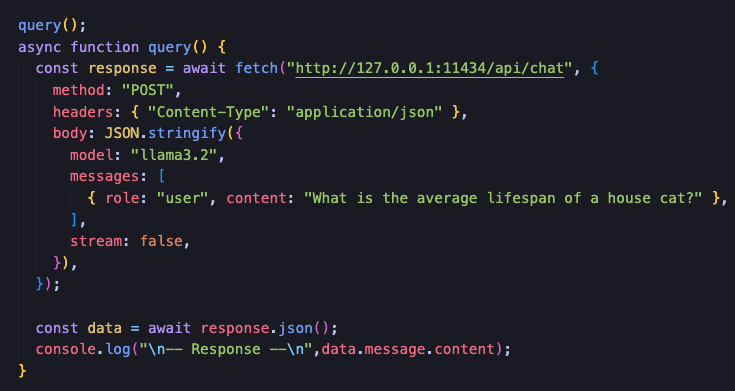
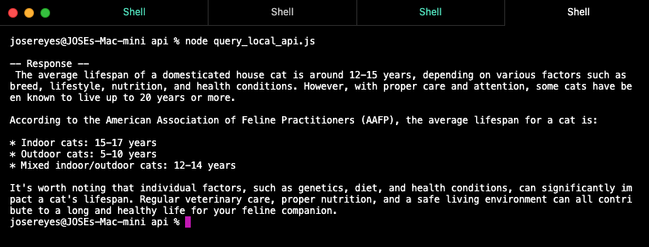
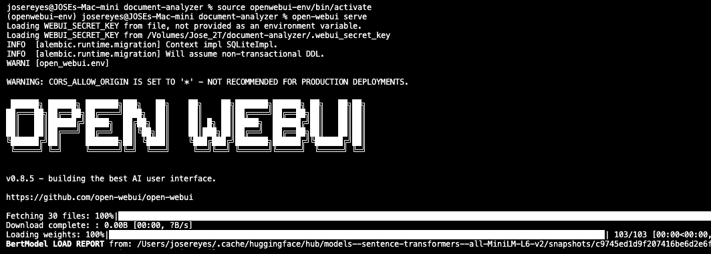

Setting up Local LLM's is a great way to experiment with various models while keeping your queries and responses private in addition to saving on cost and latency.
When using cloud based applications such as ChatGPT, Claude, Gemini, etc, we have to be careful about the type of information we submit in our queries as the information may be used to train models. Using a local setup ensures your information stays private. Initially I was skeptical about the privacy aspect, however after turning off my WiFi and submitting a query via the localhost API endpoint, responses continued to be returned.
From a privacy perspective, hosting a local LLM is a game changer, however from a performance perspective,
there are some drawbacks that should be noted.
Setting up a local environment requires some upfront costs including time and computing resources.
Smaller models can be run on consumer hardware, such as a Mac Mini M4 with 16GB of RAM, however larger
models may require machines that have additional CPU/GPU resources. Additionally, response times may take longer
to return when submitting complex queries.
With this in mind, I still wanted to continue this journey as I imagined there would be a great deal of
learnings along the way. In the following sections, I will touch on my interactions with the LLM, followed
by high level Setup and installation instructions.
Sending a query via the localhost API
I created a simple script that contains a javascript function to
submit a query via the localhost API.

When runing the script from the terminal using node, the following response was returned.

Eventually I wanted explore models that could assist with queries
specific to coding. Since I was at the very beginning of this
journey, I went with the simplist model, Qwen2.5-Coder. There are a
variety of models available to pull down and run locally via Ollama,
which I touch on further in this post.
It was long before I realized that submitting non-cat related
queries via the API was not the most efficient way to interact with
these models. This led me down the path of exploring local UI's that
were user-friendly. With so many options available, each with their
pro's and con's, I decided to move forward with Open WebUI.
Leveraging Open Web UI
Open WebUI is an open source project that provides a user-friendly
interface for interacting with local LLM's. The setup was pretty
straightforward and the documentation was easy to follow. The UI
made it much easier to submit code snippets andread the responses.
Over time I found myself using the UI more than the localhost API
for testing out queries and iterating on prompts.
In the example below, I am using Open WebUI with Qwen2.5-Coder,
asking about importing fixtures in Playwright.

Conclusion
I can honestly say I enjoyed the journey. While I have yet to explore the collection of models available, the possibilities are endless, limited by the hardware of my Mac Mini of course. Using Open WebUI is a game changer, in the sense that it allows for switching between models without having to restart any services. I value the privacy hosting locally provides, not to mention the cost savings and zero internet dependencies. I look forward to exploring additional models and user interfaces in the future.
Setup and Installation
Below are the steps I took to set up my local LLM environment using Ollama and Open WebUI.Install Ollama
Download the offical installer from the Ollama website available for
Mac, Linux and Windows.
https://ollama.com/docs/installation
Pulling down Large Language Models (LLM's)
There are a variety of LLM's available to pull down and run locally
via Ollama, depending on your use case and hardware capabilities.
For context, I have an M4 Mac Mini with 16GB of Unified RAM, so I
focused on models that could run within those constraints.
If you're just getting started, I recommended starting
with the Llama 3.x model as it's a great general purpose model for
testing out queries and getting a feel for how local LLM's work.
Models can be installed using the ollama pull command. For
example:
ollama pull llama3.2
Below is a table of some of the more popular models available.
| LLM | Creator | Description |
|---|---|---|
| Llama 3.xGeneral | Meta | Most downloaded model family on Ollama. Llama 3.1 8B is the recommended stable default for general use. |
| Qwen2.5 / Qwen3Multilingual | Alibaba | Fastest-growing model family on Ollama. Strong multilingual support across 29 languages and best non-English performance. |
| Qwen2.5-Coder Coding | Alibaba | Top-tier coding model matching GPT-4o on HumanEval. Available in sizes from 0.5B to 32B. |
| DeepSeek-R1 Reasoning | DeepSeek | Highly downloaded for reasoning and math tasks with chain-of-thought capabilities. Distilled variants available for lower-end hardware. |
| Gemma 3 / 4 Vision | Best for image understanding. Gemma 4 9B includes built-in tool calling for local agents and function calling at just 6GB RAM. | |
| Phi-4 Math | Microsoft | Best results per GB of VRAM for analytical tasks. Scores 80.4% on MATH benchmarks. Ideal for data analysis and logical reasoning. |
| CodeLlama Coding | Meta | Older but widely used coding model with the most mature fine-tuned ecosystem. Python-specialized variant remains competitive on constrained hardware. |
Starting Your Local LLM
Once you have the model pulled down, you can start the server using the ollama serve command. For example, to start the server with the Llama 3.1 8B model, you would run:
ollama serve llama3.1-8b
Installing Open WebUI
Open WebUI can be installed using pip:
pip install open-webuiopen-webui serve
This will start the Open WebUI server and you can access the interface by navigating to http://localhost:8080 in your web browser. From there, you can select the model you want to use and start submitting queries via the chat interface.